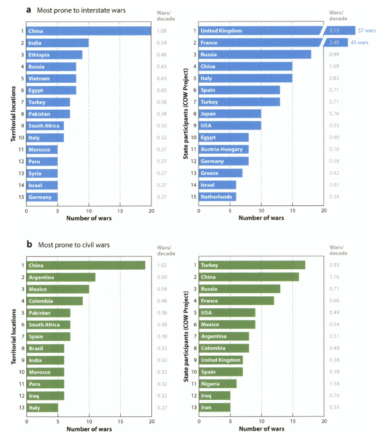

AndreasWimmer：战争|政观编译
收录于合集
#历史政治学 58 个
#比较政治学 121 个
#国家建构与国家发展 70 个
文献来源： Andreas Wimmer. “War,” Annual Review of Sociology , Vol. 40 (2014), pp. 173-197.
作者简介： Andreas Wimmer，苏黎世大学社会人类学博士，现任哥伦比亚大学社会学与政治哲学Lieber教授。
导论：社会学中被长期忽视的战争
战争是人类历史中的重大事件，两次世界大战给亚欧大陆的国家造成了极大的破坏，而冷战期间的冲突亦是如此。图1显示了过去200年间战争发生的频率，其中左列指的是爆发战争的国家，右列则表示这些国家参加了多少次战争。该图进一步区分了国家间战争（位于上半部分）和内战（位于下半部分）两种战争类型。对国家间战争来说，西方国家参与了其中的大部分，而南方国家则是战争的主要发生地。相比之下，内战则分布在全球范围。对此，社会学家是如何解释这些战争的起源、经过和结果呢？事实上从1930年末到当代，社会学家抱怨他们的学科对理解战争并没有做出多少贡献。
 图1
在1980年代，社会学家开始讨论如何解释社会学对战争研究忽视的现象。有些观点认为从Marx到Durkheim以降的经典社会学家生活在和平年代和现代社会中，以至于忽视了对战争议题的研究（Ashworth & Dandeker 1987; Mann 1988, p. 147）；而现代化理论则跌入了同样的陷阱，它认为经济发展和政治整合会促进南方国家的和平（Joas 1999），这和Spencer(1851)的线性进化论一致。另外一些学者则批评了意识形态作祟，认为这是19世纪末20世纪初的好战作者被禁所致（Maleševič 2010a）。
政治学中的战争研究
相比之下，在政治学和政治经济学中，有专门研究战争的领域，其在研究数量和实证研究的精细化程度方面都超过了社会学研究，即便是政治学专业的学生也建立了大的跨国数据库。
国家间战争
在国际关系研究当中，战争的长波理论认为，阶段性发生的战争是60年中全球经济循环或一个世纪内霸权兴衰的结果。尽管在过去200年的战争中都有主要大国的身影，但是现在的研究者们发现其并不遵循清晰的周期性。
国际关系中关于战争的主要假设从来都不是世界体系理论而是基于现实主义的假设：现代世界中拥有主权的实体相互竞争而导致的无政府状态。起先，国际关系学者关注像冷战期间那样的两级体系是否比多级体系更好战，但这与现实主义存在诸多不合，当下在很大程度上已经被抛弃，这或许是因为其在全球层面的分析样本N太量而得不出扎实的结论。
当下国际关系的研究从对全球长期趋势的关注转向对国家间决策过程的关注或者分析国家的哪些属性使得它们更加好战。如在一战前，寻求安全最大化的国家在具备军事优势时是否会攻击其他国家？还是只有当国家信奉进攻性军事信条并且技术优势超过了处于守势的一方时才会发起战争？又是什么议题让国家之间的竞争变得更像战争？对此，当下的国际关系学者们都在持续地通过实证研究加以检证。
内战
比较政治学中关于内战的文献有着同国家间战争研究类似但更精确并且聚焦行动者的微观层面研究。内战跨国研究中大样本N的出现，极大地推动了该研究领域的发展，以至于这种类型的研究迅速取代了一度占主导地位的小N比较传统。Fearon&Latin(2003)讨论了大量叛乱的模型，指出战争不是因国家合法性缺位而发生的，而是由行动者的军事动机引起的。如果政府力量虚弱不堪并且组织无序，同时境内又多山地，有利于叛军躲藏的话，那么野心勃勃的军事首领就会发动叛乱而无论打着什么样的旗号。与之相似的是，Collier&Hoeffler(2004)指出，当叛乱变得容易时，内战就会发生。进一步，Ross(2006,2012)还研究了自然资源如何影响不同类型的暴力冲突。
另一些作者分析了政体对内战的影响。其中，关于内战的民主和平论认为民主能通过投票解决内部分歧，而威权政体则能通过强力或者威胁使用大规模暴力来镇压叛乱。因此，内战在民主和威权政体中发生的可能性都比较低。相反，介于民主与威权之间的政体也即所谓的暴政才最有可能导致内战爆发（Müller & Weede 1990, Hegre et al. 2001; Vreeland 2008）。
另外一个观点是关注形式化的制度安排，如比例代表制、备选名单制、总统制或者议会制、特定类型的联邦制度等等，它们也更可能阻止内战。
内战研究的新趋势
近来，更多关于内战的研究不再只关注哪些国家在什么年份更容易爆发冲突，它们进一步纳入了对这些战争会持续多长时间的讨论（Fearon 2004, Cunningham 2011, Wucherpfennig et al.）。
在这些包括不同议程的研究基础之上，我们可以看到内战研究中的三重趋势转向（also Cederman & Gledit 2009），首先是研究内战发生单元的转变。此前关于内战的量化研究都将国家- 年份作为观察单元，而近来的学者们都开始使用细分数据，将内战分解成不同的战争阶段（Raleigh & Hegre 2005）或者研究地区层级的战争威胁，这样允许研究者将不同层级的事件整合起来（Buhaug & Rod 2005, Aas Rustad et al.2011），这类的研究提供了观察战争战略和手段的新视角，允许我们理解地形、自然资源和军事驻点等影响战争发生地点的变量；其次是研究谁在内战中遭到杀害以及为什么会出现这样的情况。对此，一些研究（Weinstein 2006; Humphreys & Weinstein 2006）指出，能从自然资源或者在政府掌控之外获得财源的叛乱组织更不可能按照科层制组织起来，因此他们对枪支的管控十分松懈，也就更可能发生劫掠甚至杀害平民的事情（Cohen 2013）。Kalyvas(2006)指出，叛军和政府军都试图找出在地方上与他们反对者合作的人再杀掉他们。此外，关于内战的贪婪理论与致力于防止非洲冲突的那些著名非政府组织一样都坚持认为，例如钻石和其他可供开采的自然资源是导致军阀、政府军和叛乱组织之间发生武装冲突的主要根源，而位于资源富裕地区的民众更容易成为受害者（Azam & Hoeffler 2002）。第三，近来的研究提出了观察冲突的新视角——通过调查或者访谈曾经参与战斗的当事人（Parkinson 2013）来研究交战的动机、招募的模式、暴力的经历以及冲突后的行为，而不是通过国家层面的变量进行推算。
社会学路径
如开篇所述，尽管过去几十年来出现了研究战争和暴力冲突的政治社会学，但这些研究像是老调重弹，正应证了“社会学在推进我们对战争的理解时几乎无所助益”的那种论调。接下来，我对这些文献的评论仅限于社会学家可以深入研究的与上述已经占据主导地位的政治学研究有所不同的领域，如在政治合法性和文化框架、政治权力配置和怨恨、组织发展以及长期历史转向等方面的研究。
合法性、文化框架以及集体记忆
政治合法性的原则：民族主义。 Luard(1986) 讨论了过去600年来，不同类型的国家如何发动战争。他介绍了王朝国家、主权领土国家、民族国家以及共产主义国家由于领导人不同的文化背景，对荣耀耻辱、战胜战败、朋友敌人等概念的不同理解，从而在战争的动机、目的和决策程序上存在巨大的差异。Wimmer&Min(2006)、Wimmer(2013)在1816年迄今的全球数据的基础上进一步发展了Bendixean(Bendix 1979)的话题，他们的研究表明战争最可能因为政治合法性原则——神权政治、帝国、绝对主义以及民主国家的变迁而发生。值得指出的是，这些政治学研究认真地将民族主义视为战争的根源，并把重点放在组成国际体系的国家性质上，这与标准的国际关系研究大相径庭。这些研究将民族主义当做解释战争的重要原因（Van Evera 1994）而不是“国际政治中的第二秩序力量”（Mearsheimer 1990,p.21）。此外，近来政治学中研究民族主义和战争的文献开始出现变化。Miller(2007)将族群政治的人口维度和国家力量结合起来解释了战争的类型：如果一国政治性地动员自身认同属于其他国家的少数民族，就最可能引发国家间战争；而在政治动员少数民族的弱国家当中，最有可能发生内战。最后，社会学家Feinstein(2012)研究了美国“聚旗效应”背后的机制，该机制使总统能够在公众的支持下发动国际战争。未来该领域的研究需要更精确的回答这些问题：如何以及由谁来体认合法性和国家认同。为了避免内生性问题，后续的研究一方面可以分析全球范围内的时间序列数据，以了解在冲突爆发前人们对包括政府在内的主要政治行动者的看法；另一方面可以运用调查或自然实验来更精确地识别个体对政治行动者合法性看法的条件。
国际文化秩序。 社会学研究关注的第二个重点是全球层级制度的合法性原则。在战后世界中，国家主权及其边界的神圣性代表了这种制度化的合法性原则，所以这也导致了战争的持续：因为南方国家的政府被合法化、建立了财政制度甚至得到了国际体系的军事支持，它们更不容易被叛乱推翻。尽管如此，他们在制度化或者军事上仍然脆弱不堪，其结果是内战的持续时长比二战前长了3倍。
文化框架与规范。 如通过对美伊战争（2003-2011），海湾战争（1990-1991）以及苏伊士危机（1956）中公共话语的分析，Smith(2005)研究了话语叙事会导致军事行动变得可能，后来其他的学者进一步发展了这种分析框架。
文化后果：军事主义与民族主义。 这使得社会学研究关注战争的文化后果，如Shaw(1991)讨论了一战和二战的全面动员形成了军事主义政治文化。而东欧的民主化和斯大林体制的瓦解，促成了前社会主义国家民众对军事征兵抵抗的兴起。Wagner- Pacifici(2005)在更微观的层面研究了文化表现与终战仪式之间的关系，如她分析了三十年战争（1618-1648）、美国内战（1860-1865）以及二战（1936-1945）中投降的场面。Maleševič(2010)指出，如果民族主义意识形态不能深入的嵌入到每个普通公民关于政治世界的日常观念当中，战争就不会推动形成民族凝聚力，提供英雄记忆或者建立共同体。这些战争的各种文化社会学研究提出的重要问题是，构筑冲突（Smith）或纪念战争（Wagner- Pacifici, Smith, Hutchinson, Marvin & Ingle, Olick, Giese）的不同形式是否会影响政治精英的行为——这有别于不断发展的政治联盟结构、军事能力和现实主义传统关注的其他方面。比如德国关于内疚（由于发动了世界大战）的政治文化是否形塑了其外交政策偏好，使其在二战后比好战的美国更不热衷于发动对他国的战争（Marvin & Ingle 1999），这是一个等待更严格比较和实证检验的猜想。
国内权力配置与怨气
社会学中第二个视角是将战争作为反对国家权力的政治斗争结果。可资对照的是，在政治学中，内战通常被用于分析国家的镇压能力、个人反叛的动机、包括股票崩盘、自然资源或可购买商品等在内的经济诱因，导致政党极化的制度平台以及战后权力分享联盟的承诺问题等等。
Olzak(2006)通过使用包括族群信息在内的数据，讨论了意识形态和权力相关因素的结合决定了族群动员是否升级为暴力冲突和战争。Wimmer、Cederman和Min(Wimmer et al. 2009)也关注了族群冲突与战争，他们使用了一个新的全球数据集来更精确地描述族群政治权力关系的变迁。在既有的研究框架（Wimmer 2002）基础上，他们展示了如果权力构成中族群排斥更显著，即如果大部分人口仍与以全国政府为中心的政治权力联盟网络脱离，那么更可能爆发族群战争。这代表了对政治学中不将怨气作为理解内战的一个重要的修正。而政治学家对该数据集的进一步探索推动了对战争的权力配置观的进一步完善。Roessler(2011)展示了在充满承诺难题的不稳定联盟中，非洲领导人可能抢先发动政变并使他们先前的盟友边缘化，从而导致政治不平等，这又可能加剧内战进一步发展。迄今为止这些文献讨论了族群政治权力结构，但是相似的路径也可以被用于分析其他类型的政治分裂议题，如阶级、地区、专业或者政党联盟以及所有关于权力配置的图景。
国际关系学者也讨论了权力配置。Walt(1992)强调了国内权力配置的革命性改变与国家间战争的可能关系。Colgan(2013)讨论了革命导致国际战争，这是因为摆脱革命动荡的领导者天生就不会厌恶冲突，并且在政治上更具野心。Mansfield&Snyder(2005)强调了国内权力配置变化和国际战争之间的关系。他们证明了在民主化的早期阶段，一国更容易与其他国家发生战争。其他的一些学者则研究了反向关系：国内权力配置的转型可能源自于国际战争，比如Skocopl(1979)对法国、俄国和中国革命的研究。
最后，另一群政治学家探索了战争是否能增强专制向民主转型的可能。Celestino&Gleditsch(2013)展示了暴力叛乱增加了专制政体转型的几率。Mansfield和Snyder(2010)通过系统统计分析展示了1827年到1997年之间外部战争和民主化前景，其结论不支持“战争系统性地阻挡了民主化”的观点。相似的是，Wantchekon&Garcia- ponce(2013)以及Bermeo(2010)都发现二战后从暴力冲突中生长起来的民主政权比通过和平方式产生的民主政权持续的更为长久。Downing(1992)则得出了相反的结论，与强大的周边国家进行频繁的战争会推迟民主转型。
此外，Shaw(2003)还指出大多数种族灭绝是在战争期间发生的，因此没有理由将种族灭绝研究划分为一个单独的领域，从而明确指出了战争的另一种更为消极的后果。
组织发展
国家能力。毫无疑问的是，社会学家最重要的贡献是对国家发展和战争进行的比较历史分析。承接Hinze(1975)在一个世纪前的讨论，Tilly在他闻名遐迩的著作中（Tilly 1975,1990,2003）中通过对西方历史的回顾，指出国家征税与嵌入领土的行政管理能力在与其他国家战争的过程中得到了加强。简而言之，国家越能深入其腹地，就拥有越强的行政能力，也就越能汲取更多的财源以供维持武备，因而就越有可能在战争中取得胜利，由此也就越有可能控制且更完整的控制领土，推动财政能力的进一步增长，从而推动新一轮的战争。其他社会学家研究了发展的基本线索，尽管Mann（1986-2013，Vol.2）将税收对大众的动员作用加入到分析当中，讨论了作为对增加税收的回报，公民开始要求政治参与，从而导致了政治上的更包容性，推动了政体的民主化。Giddens(1995)提出了从国家形成到国际战争的相似过程。他讨论了政治现代化、对国内人口日益增长的控制和监管，以及通过公民权和民主的逐步整合，在国家权力的边界内产生了同质化以及在很大程度上和平化的社会空间。
近来更多的研究扩展了Tilly的理论。Slater(2010)指出，东南亚民众暴力叛乱的作用同早期现代欧洲领土国家发生的战争一样，如果精英之间能形成联盟，那么国家的行政管理能力和军事能力就会得到发展。
相似的是，一些学者聚焦到国际体系的结构。国际体系给予了国家法律意义的承认，甚至保护了那些脆弱国家不被征服，如果将这些弱国家放在早期现代欧洲的国家间战争中，他们将无法生存。其结果是，非洲那些很迟才独立的国家（Jackson 1990）往往都是倾向于内战的弱国家类型（Holsti 1996）。Centeno(2003)则指出，相对和平的独立之路与后殖民时代低频率低密度的国家间战争使得拉美国家比好战的欧洲对手更脆弱。
与此同时，一些关键研究修正了Tilly关于欧洲案例的研究。他们展示了战争不是在旧大陆上诞生现代国家的唯一道路，如法国的中央集权化不仅早于频繁的战争，而且是通过政治收买和建立联盟实现的（Spruyt 1996,ch.5）。还有研究指出，只有官僚职位不再被收买并且在位的都是拥有高等文凭的职业群体时，战争才会推动中央集权化（Ertman 1997）。
这些关于战争与国家建构之间关系的研究能在欧洲以外的地区，如拉美和东亚的许多案例中得到进一步的深化。然而需要挑明的是，基于一个大陆甚至全球范围内长时段的量化分析在当下仍然是难以企及的，因为并没有发现关于国家能力的好的指标（Hendrix 2010）。对此，需要做大量的努力来克服这一困难，来更精确地理解国家间的战争是否发生在国家能力得到增强之前、之后或者同时发生；这些范式是否只适用于分析特定的时段或者地区；是否存在建立行政管理中央集权化国家的其他路径；脆弱的行政管理能力是否是内战的诱因等。另一种可能是将国家边界频繁的变动和相对稳定的人口作为自然实验来研究国家能力与战争可能性的关系，包括这些特定区域的内战可能性（比如利用国家边界的变动来分析，Darden 2013）。
福利与公民权。 历史社会学家也研究了组织发展的其他方面，最重要的是福利国家与公民权的兴起。与研究官僚化和国家形成的研究相比，战争现在几乎无一例外地被当作制度发展的原因而不是结果。一些作者研究了对老兵的照料之于现代福利制度产生的基础性作用。或许英语世界中最突出的研究当属Skocpol（1992）。她指出，对美国内战中的老兵及其家人的关怀代表了一个重大的制度创新。其他的研究也讨论了战后日本、加拿大和欧洲多国朝向福利国家的转型。此外，相关的主题关注了19世纪和20世纪战争中大众参与对公民权的影响。Andreski(1968)指出武装力量的增长会导致出现非民主、科层的以及高度集权化的政体。相反，普遍的征兵为全面的公民权和民主做了充分准备。Marwick(1988)讨论了全面战争促进了包括投票在内的参与。相似的是，Mann(1987)认为，从拿破仑战争起持续到二战的“公民战争”，公民与军事参与在各个地方都得到了不同的发展。
Markoff(1996)讨论了为了填补工厂中男人的空缺，世界战争推动了女性和穷人的平权。在相似的场景中，Hughes(2009)展示了发展中国家的长期内战促成了议会对女性代表开放的分析结果。沿着相似的线索，还有研究关注了公民在志愿组织中的参与而非公民权或政治代表。Kage(2010)发现经历过二战的世代群体更可能参加志愿组织，特别是那些在战争中被充分动员起来的社会（如二战前的美国，Skocpol et al.2002）。Blattman(2009)发现被活跃在乌干达北部的圣主抵抗军（Lord’s Resistance Army）绑架作为童军的儿童在后来更可能参与投票并在公共事务中表现得更加活跃。
此外，与其他研究领域一样，更多的研究需要解开不同的因果路径以及正负反馈（或内生性）。研究战争、福利以及公民权能促使研究者更系统地考虑以历史为导向的福利研究文献（Ritter 1986）以及民主化研究文献（如Boix 2011）。
长期、复杂的以及偶然的
关于战争的政治社会学最后一个特征是采用长期的历史视角。 正如前述的那些原因，这一做法在国际关系（除了竞争理论；Senese & Vasquez 2008）和比较政治（除Darden 2013）研究中在很大程度上已经被抛弃。相反，前述的很多文献体现的都是长期的历史视角，包括Tilly启发的一代国家建构和战争研究；关注合法性的原则从帝国向民族主义转移从而引发战争的研究；战争与福利国家发展的研究以及战争与民主之间关系的研究。这些跨世纪的长程研究形成了长期的规律性模式。因此，如果仅将分析或数据范围缩小到几年之内，就看不到这种规律性。
另一个特征是对复杂性和偶然性的容忍。 Mann在其《社会权力的来源》五卷本（1986-2013）中讨论了过去一千年的人类历史，包括战争的形塑作用。Mann并不致力于对何时可能爆发何种战争做一个清楚的因果推论，尽管他的理论给予社会中军事权力非同寻常的地位，这也是独立于权力体系中经济权力、政治权力与文化权力之外的另一种权力。Mann并没有形成关于战争的理论，因为他将历史视为在很大程度上连续的过程：意识形态、政治、军事和经济过程彼此并不同步；相反，每一个体系都产生了自己的范式，并且遵从自己正确的逻辑，遵照不同的节奏或时间。为了理解战争如何形成、在哪形成以及后果，Mann将其他影响事件链条和社会发展的非军事力量如资本主义的兴起、民主的形成以及技术革命等都纳入讨论。有人会指出，扩展Mann的研究，确实可以看出经济、政治、意识形态或者军事机制影响战争爆发和结果的规律，但是具体的历史发展，如导致特定战争的发展，只能将其重述为多重因果机制共同影响的结果。这种历史观——历史是因果效应的偶然性结合（Tilly 1995），是对寻求经常重复出现的因果机制的一种补充，而这种因果机制正是当今政治社会学和政治学研究的重点。
两点总结
如前所述，社会学家关注文化/意识形态/合法性、政治不平等、组织发展以及长期；相比战争的起因，他们更多研究战争的后果。
未来通过控制案例比较、统计研究或者自然实验识别个体层面的机制能导向更广义的机制。整理这些机制来发现它们的有效性，识别它们在何种条件下才会运作，并且找出相反的机制使其失效或者逆转结果也仍然是未来研究的重大挑战。在当下社会科学不再忽视战争形塑现代社会重要方面的基础上，纳入多方面更系统和更理论化的整合研究或许行之有效。
全文注释和参考文献略
编译：杨端程 审校：赵德昊 编辑：康张城
【政文观止Poliview】系头条号签约作者